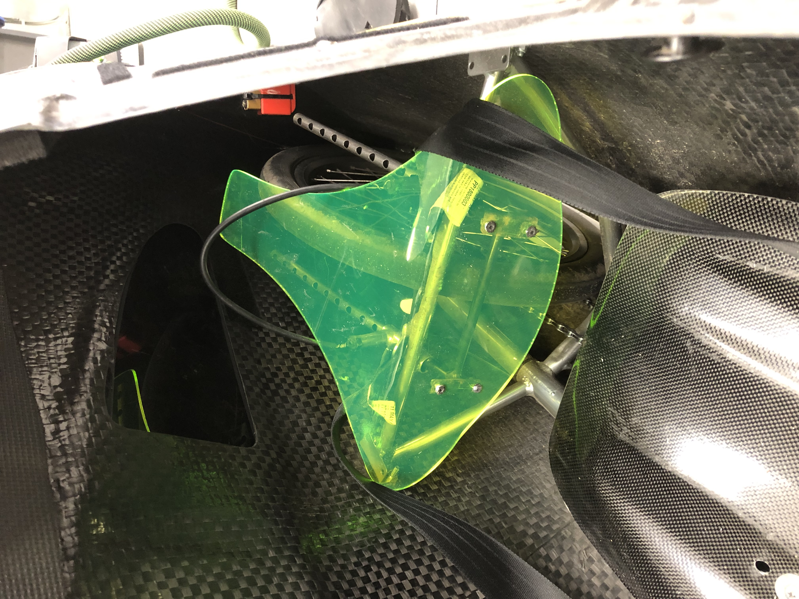
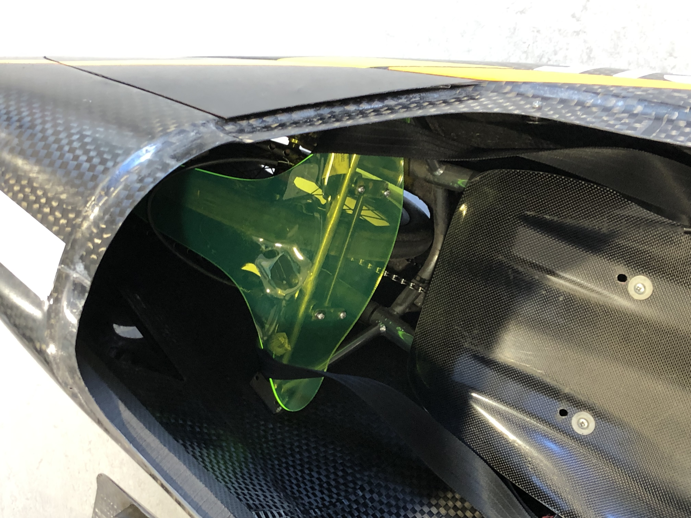
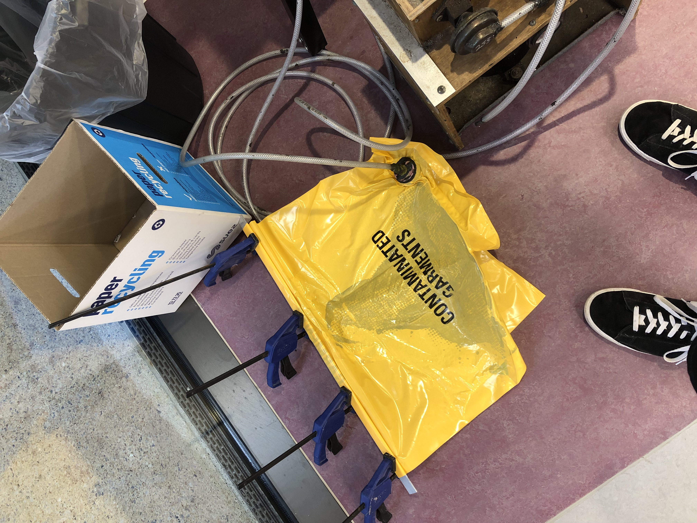
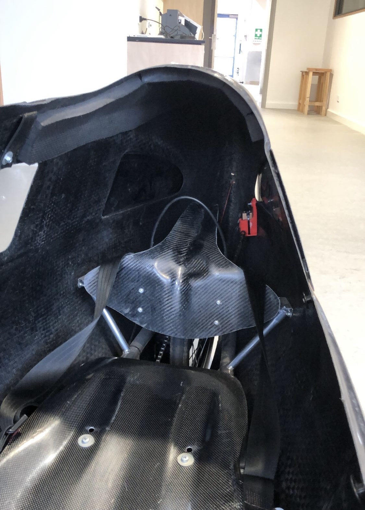

Custom vacuum-bagged composite headrests for a human-powered racing vehicle, fabricated in my garage with no prior composites experience and no access to formal tooling.
In Year 12, I was struggling to fit in our Pedal Prix vehicles, hurt by the fact the OEM headrest was not equipped for taller riders due to the space it took up. I needed a headrest that could be custom-shaped to my body, light, and stiff. Composites was the solution, but I had no experience nor access.
I needed a way to produce a mould that accurately contoured to my body without access to CNC machining or proper mould-making materials, and I needed to learn vacuum bagging from scratch, whether in a garage, or whatever I could source locally.
To make the mould, I found some 3mm acryllic at school, lasercut it into a ballpark 2D shape, and then using a head gun moulded it to my body. I took the OEM headrest, and traced its bolt pattern onto my template to ensure the new headrest would fit the existing mounting points. The first mould was too flimsy, the integrated mud guard would bounce and scrub on the rear wheel.
My next iterations followed the same process, lasercut, heat gun moulding, and then I shifted my focus into removing the flimsy mud guard, by adding a notched profile - all done by hand. The final headrest, perfectly moulded to my body, and made with no budget, I found a moulding solution that worked.

First mould iteration with flimsy integrated mud guard

Third mould iteration with notched profile, improved contour
I learned vacuum bagging entirely from online resources and trial and error. I taught myself quickly about correct mixture ratios, the required consumables, and post processing. The hardest part was getting a bag to seal up without dropping hundreds of dollars on a quality pump and bagging materials. I used an old fridge pump from a family friend and to seal the bag, rolled the end over a few times with clamps to seal it up.
My first attempt was \(somehow) a success, using twill carbon on the inner and outer layers, sandwiching chopstrand fibreglass in between for thickness. I learned that adding the chopstrand was largely adding weight and no strength, so for my next ones, and to help negate the flimsy mud guard, I added uni-carbon between the twill layers, and some thicker bi-axial weave to bulk it out.

Headrest under vac
The third iteration was a success, I tested it on training days, and raced it at the 24-hour race. For a first attempt at vacuum-bagged composites, I was thrilled to have a functional part that fitted the vehicle and performed well.
What I didn't expect was that solving this problem would define the next three years of my engineering work. The same skills, wet layup, vacuum bagging, iterative process development under tight constraints, now underpin structural work on vehicles targeting Mach 2 and beyond. My most advanced current composites work is developing a co-cured carbon fin-can for a Mach 3.5 record-attempt rocket.

Second iteration headrest fitted to a trike